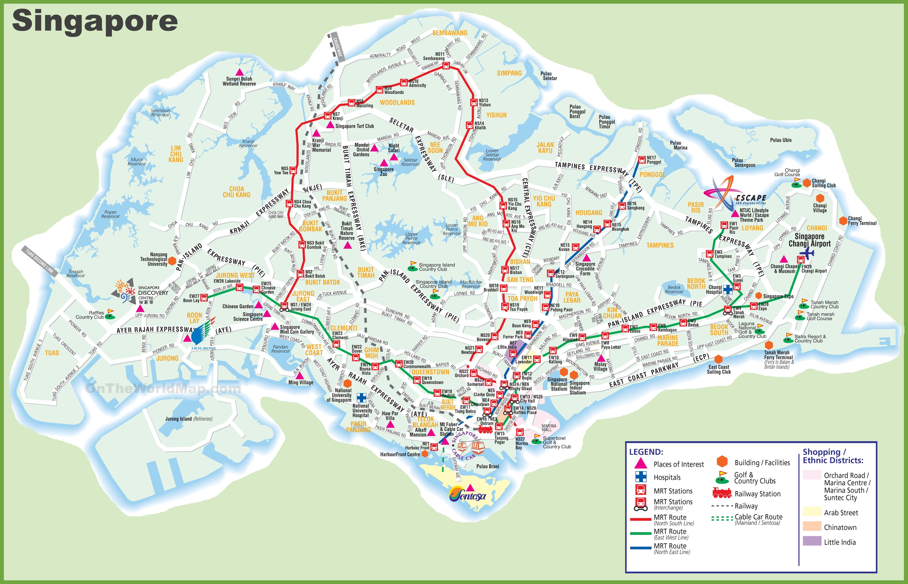
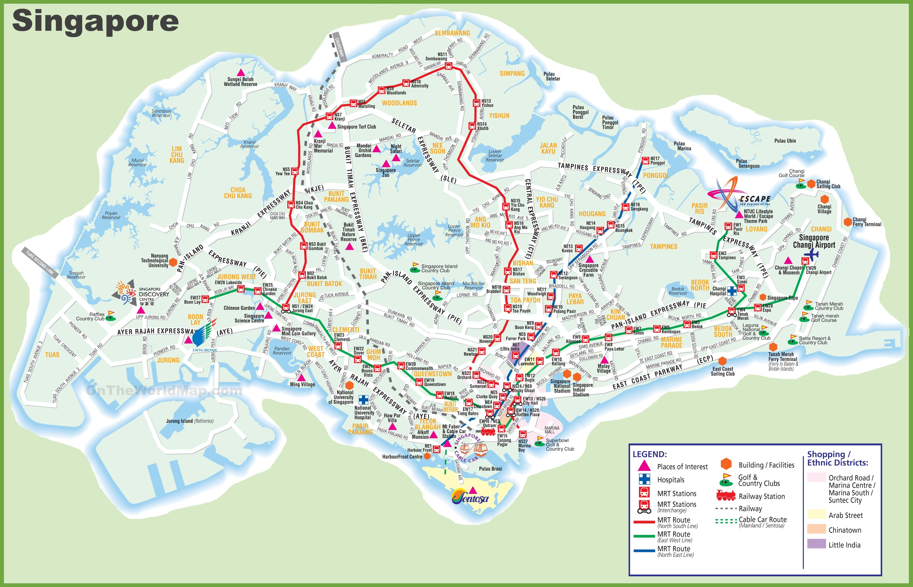

Neighborhoods
Below is a map of Singapore's transit system, which should be helpful for our volunteers in finding stray cats to catalog and report.
Below is a map of Singapore's transit system, which should be helpful for our volunteers in finding stray cats to catalog and report.
